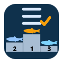

tsbiomass is an R package for TS-length model transferability and TS-to-biomass decision support, covering candidate-model ingestion, reference-anchor selection, policy benchmarking, and uncertainty calibration.
It provides an end-to-end workflow for model recommendation and scored evaluation, including outer-loop holdout validation and ablation analysis with Sentinel.
Installation
Install from GitHub:
install.packages("pak")
pak::pak("brandynlucca/tsbiomass")Or install from a local clone:
install.packages("devtools")
devtools::install(".")What You Can Do With tsbiomass
- Build and normalize candidate TS-length models from configured inputs.
- Benchmark transferability policies and calibrate uncertainty.
- Train and fit policy learners for recommendation.
- Produce scored predictions through
Referee. - Run outer-loop validation and ablations with
Sentinel.
Workflow At A Glance
|
|
Configure analysis settings Specify paths, trait/policy registries, and runtime controls in a single configuration surface. This establishes a reproducible run contract before any modeling begins. |
Candidates
|
Assemble candidate model data Ingest and normalize candidate-model records, then identify reference anchors. This produces the standardized input set used for transferability evaluation. Various methods enable empirical approaches for constructing similarity matrices and estimating proxy model transferability tax. |
Alchemist
|
Build similarity context and admissibility filters Quantify donor-target relatedness and remove unsupported transfer paths using a Super Learner ensemble to construct similarity and transferability matrices, with optional post hoc ordination to visualize proxy model diversity. This constrains downstream policy decisions to credible support regions. |
|
 PolicySelector PolicyLearner
|
Select and learn transfer policies Benchmark policy families, calibrate uncertainty, and fit meta-learners for context-aware policy choice. This stage determines which transfer rule is applied where. - PolicySelector: benchmarks and ranks available transfer policies against reference anchors, then calibrates prediction intervals.- PolicyLearner: fits a context-aware meta-learner that recommends the best policy for a given target based on cross-validated performance.
|
|
|
Generate predictions and score outcomes Generate policy-level predictions, aggregate them via referee logic, and summarize performance and interval behavior in scorecards for direct comparison. - PolicyPredictions: holds raw policy-level point predictions and uncertainty intervals for each target.- Referee: aggregates predictions across policies using learned weights and resolves conflicts into a final recommended estimate.- Scorecard: computes scored performance metrics (e.g., interval score, log-error) for comparing policies and learner configurations.
|
Conjurer PolicySimulator
|
Probe sensitivity to assumptions Stress-test the pipeline by perturbing inputs and settings before committing to a recommendation. - Conjurer: evaluates the effect of trait missingness on TS-length proxy model uncertainty.- PolicySimulator: reruns policy benchmarking across perturbed scenarios to quantify how sensitive transfer-policy choice is to candidate-pool and admissibility settings.
|
|
|
Validate under holdout scenarios Run outer-loop holdouts and ablations to quantify robustness across species/study splits and sensitivity to trait and gate assumptions. |
Quick Start
library(tsbiomass)
# Configure
cfg <- build_configurer(create_configuration_template(), base_dir = getwd())
# Candidates + anchors
candidates <- build_candidates(cfg)
candidates <- set_reference_anchors(candidates, selector = list(regional_body = "SWFSC"))
# Similarity + admissibility
alchemist <- as_alchemist(candidates) |> forge_distances() |> screen_admissibility()
# Policy selection + learning
selector <- as_policyselector(alchemist) |> benchmark() |> calibrate_uncertainty() |> select_policies()
learner <- as_policylearner(selector) |> crossfit() |> fit() |> calibrate_uncertainty()
# Score
predictions <- predict(selector, learner = learner)
scorecard <- predict(as_referee(selector, learner = learner, predictions = predictions))Outer-Loop Validation With Sentinel
Supply a fold-local workflow function and run holdout validation in one call:
sentinel <- build_sentinel(
data = candidates,
workflow_fn = my_workflow_fun, # function(candidates, cfg) -> Referee
config = cfg,
split_mode = "species_holdout",
trait_ablations = TRUE
)
sentinel <- run_sentinel(sentinel)
plot(summary(sentinel, type = "validation"), metric = "error_abs_log")